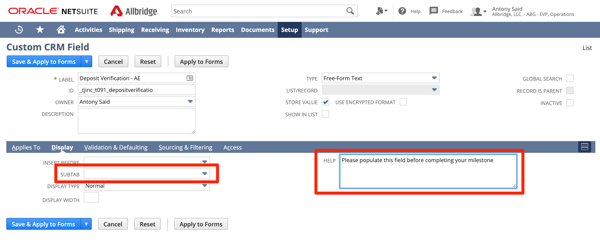

New Template with New Milestones
- Navigate the “Project Templates” shortcut on your dashboard.
- Click on the “New Project Template” button found on the top of the screen.
- Enter a name for this template in the “Name” field. For example, “Allbridge Entertainment”. Leave the remainder of the fields on this screen as is.
- Click on the “Resources” subtab.
- Enter in the default resources that you would typically want to have on this Project type. Examples of what you would enter would be Project Director, Project Manager, Project Coordinator, Install Manager, etc. Do not worry about the ‘Role” field for the default resources you select, as this field will update automatically to the role of the individual once you add in a real employee. It is based on the employee’s default project resource role.
- Click on the “Project Finance” subtab. In the “Billing Type” field, select “Fixed Bid, Milestone”. Leave the other fields on this subtab as is.
- Click “Save”.
- The new Project Template is created. You can now start adding in the milestones and their dependencies.
- A Subtab called “Schedule” should now be visible. Click on this subtab.
10. Click on the “New Milestone” button as shown in the screenshot above.
11. A new popup screen will appear.
12. On the popup screen, please fill out the below fields, and see screenshot below:
a. Name - For example, Sale Verification - AE or Sale Verification - Allbridge Entertainment
b. Insert Before - This controls where in the order of the milestone schedule this milestone will appear.
c. Task Length in Days
d. Default Resource - This should be a generic resource, such as Project Manager or Project Coordinator. Type in the generic resource name into the search bar and click “Search”, then click on the name to add it.
e. Predecessor - Select a milestone from the “Task” dropdown. This indicates which milestone needs to be completed before this milestone will be Ready to Start.
13. Leave all other fields on the milestone schedule as is, for now. Please ignore all the Subtabs that your seeing across the milestone. We will be addressing those in a later step.
14. Click “Save”. The milestone will be added to the schedule for this template.
15. Repeat steps 10-14 to add more milestones. Keep repeating those steps until you have added all the milestones that you want to the schedule.
16. Next, we will be adding in new subtabs that will house all the special fields that only apply to specific milestones. Go back to your Home dashboard (it should still be open in another tab)
17. Click on the “Subtabs” shortcut on your Home dashboard.
18. Click on the “CRM” section.
19. Add a new subtab for each new milestone you have added on your new Project Template. For example, if you have a milestone on the Allbridge Entertainment template called “Deposit Verification”, then you would create a new subtab called “Deposit Verification - AE”.
20. Once you’ve added a new subtab for each of your new milestones, click “Save”.
21. Next, we will link the new Subtabs to the Project Visualization Table. Each new Subtab will have a unique code (e.g. T091, T092, etc), and this code will be used to tag new fields you create to those milestones, so that the fields don’t show up on every milestone. Navigate to your Home dashboard.
22. Click on the “Milestone Specific Fields” shortcut.
23. Click on the “Task Subtab” column header highlighted below. This will sort the codes in ascending order.

24. Go to the second page of this screen by clicking on the right arrow. Scroll to the bottom of the list. The last code should be T090. Any new subtabs you add should continue from T090. As in, T091, T092, T093, etc...
25. Click on the “New Projects Visualization Table” button found at the top of the screen.
26. In the “PJ Task Name” field, enter the name of the new milestone. For example, “Deposit Verification - AE”.
27. In the “Subtab Code” field, enter the code for this milestone. For each new milestone, increase the code by 1. The next one in this list should be T091. Note, once you reach T099, the next one should be T0100, then T0101, etc.
28. Repeat steps 25-27 for each of the milestones you have in your new template.
29. Next, we will be creating the new fields and tagging them to the corresponding milestone. Navigate back to your Home dashboard.
30. Click on the “Add New Milestone Field” shortcut.
31. On the resulting screen, click on the “New” button, shown below.
32. On the resulting screen, enter in the below details of the new field that you are adding.
a. Label - This will be the name of your new field. If this field also exists on other milestones, then be sure to add a suffix to the field name. For example, if the new field you are adding is called Deposit Verification, and it belongs to the Allbridge Entertainment project template, then you should name the field “Deposit Verification - AE”.
b. ID - all IDs for milestone fields that are in the subtab section should begin with the prefix “_tjinc_t0XX_fieldname”. For example, “_tjinc_t091_depositverificatio”. Note: there is a 30 character limit on the ID field. Anything after the last underscore in the ID field doesnt really have an impact on anything, and is just for informational purposes. You may cut the name short if you run out of space, as shown in the example.
c. Type - Select the type of field you want to create
d. Project Task - Check off the Project Task checkbox
e. Display - Click on the “Display” subtab. On the “Subtab” dropdown, select the name of the subtab that you want this milestone to show up under. For example, “Deposit Verification - AE”
f. Help - In the Help field, enter in a description about the field. This description will appear when you click on the field name.

33. Hover over the “Save” button, and a dropdown menu will open up. Click on “Save and Apply to Forms”.
34. Create the remainder of the fields that you want to appear on each of your new milestones by repeating steps 30-33.
35. Once you are done creating all your fields, go back to your Home dashboard.
36. Click on the “Project Templates” shortcut.
37. Click “View” on your new Project Template.
38. On the resulting screen, click on the “Schedule” subtab.
39. Click “Edit” on the first milestone in the list.
40. On the resulting popup screen, click on the “System Information” Subtab.
41. On the “PJ Task Subtab Link” field, select the name of the milestone from the dropdown. For example, “Sale Verification - AE”. Note: This dropdown lists all the Milestone subtabs that you created, and will control which Subtab will show when someone opens this milestone. The remainder of the subtabs (and their fields) will therefore not show up.
42. Repeat steps 39-41 for each of the milestones on your new template.
43. Now, when you create a project with your new template, the fields in the header section will be common to all the milestones. However, the fields that only apply to a specific milestone should only show up in the special subtab that is linked to that given milestone through the “PJ Task Subtab Link”.
Created with the Personal Edition of HelpNDoc: Free help authoring environment